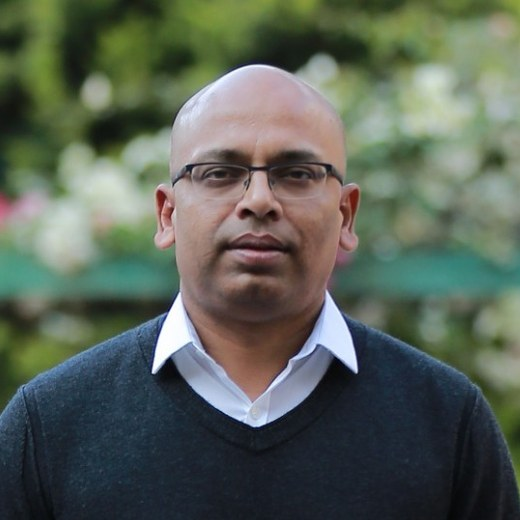
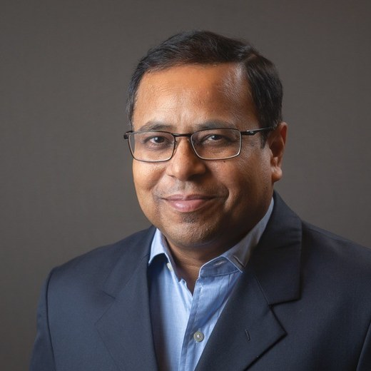
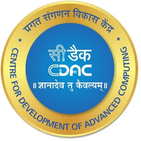

We design deterministic
silicon for the
industrial edge.
Ananant Systems builds silicon that computes at the point where data is generated, connects machines to the systems around them, and runs perception within a bounded response time.
01Vision & positioning
One silicon foundation, two markets.
Connectivity and perception are treated as separate markets served by separate silicon. Computationally they are the same problem.
Ananant designs the compute layer between the sensor and the AI brain. Dense linear algebra on streaming data, under a deadline, is what both workloads reduce to — and that is the observation the company is built on. One compute unit, one instruction set and one toolchain serve both.
The consequence is structural rather than incremental. A single verification effort amortises across every product in the catalogue. Software written for the first generation runs on the third. A customer designing in on one side inherits engineering done for the other. Two independent demand engines, one cost base — neither dependent on the other, and every engineering hour serving both.
This only holds if the foundation is ours. We design our own DSP rather than licensing a signal-processing core. That is what makes the instruction set extensible into the domains our customers work in — 5G and 6G, camera, video, radar, LIDAR — and what puts the performance, power and cost curve under our control rather than a supplier’s release schedule.
The timing is set by where decisions are moving. As intelligence moves from data centres into machines, the reasoning layer is well served and the layer beneath it is not: the perception and connectivity work that has to happen at the machine, in bounded time, inside the power and cost envelope of a camera or a battery-powered robot. We build that layer, beside the reasoning layer rather than against it.
Silicon and the software layer above it
We supply the die and the software that makes it deterministic. The femto system is a deliberate exception, as the most direct route from our silicon to volume.
Alongside the application processor
We serve the machine classes that are not economic to address from the application processor alone.
Not automotive, not smartphones
We address sockets where determinism, power and service life are the deciding factors.
We do not build applications
Applications are built by software vendors and integrators on our SDK. We supply the silicon and the platform beneath them.
02History
Company milestones.
2023
First live demonstration at India Mobile Congress
The architecture running on FPGA at India’s largest telecom event.
India Mobile Congress, New Delhi
2024
Mobile World Congress, Barcelona
Demonstrated integrated with commercial L2/L3 stacks in a working network configuration. Second consecutive year at IMC.
MWC Barcelona · IMC New Delhi
2025
MWC Barcelona and IMC, third consecutive year
The same architecture demonstrated further along the production track.
MWC Barcelona · IMC New Delhi
2025
Approved for DLI EDA Tools
Approved for EDA tool access under India’s Design Linked Incentive scheme, with working relationships across MeitY, C-DAC and the Department of Telecommunications.
MeitY · C-DAC · DoT
2026
Gen 1 silicon in production
Connectivity silicon in production and available to customers, including the chip, the L1 software and the complete femto system.
Gen 1 connectivity
Jul 2026
Gen 2 committed to tape-out
The Gen 2 architecture is committed and the tape-out plan is in place, with substantial RTL complete — connectivity and perception on one die.
Gen 2 tape-out plan in place
03Team
Founders.

Amiya Pathak
Founder & CEO
Built ZipDial to over one billion interactions for 100+ global brands — #8 on Fast Company’s Most Innovative Companies — and sold it to Twitter, where he went on to lead the Bangalore product and engineering hub.
Built and led teams across leadership roles at global platforms including Twitter and Coinbase. A long-standing participant in the Indian deep-tech ecosystem as advisor, investor and partner.
B.Tech, IIT Kanpur · IIM Calcutta · LinkedIn ↗

Dr. Chitranjan Singh
Founder & CTO
18+ years of modem R&D at Qualcomm, San Diego — architect of the first software-defined LTE smartphone modem and of the MIMO demodulation architecture used across much of the smartphone market. Qualcomm “Super Qualstar Hall of Fame” awardee.
Every core technology on the Ananant roadmap — DSP, PHY, MIMO — he has architected and shipped before at production scale, with no re-spin in any generation. He has built the silicon teams to match, and has assembled Ananant’s engineering core from Qualcomm, Google TPU and Intel alumni.
PhD & MS EE, UT Dallas · B.Tech, IIT Kanpur · LinkedIn ↗
05Partners
Institutional partners.
Anchor partnership
Indian Institute of Technology Kanpur
Research collaboration on the instruction set, with shared post-silicon validation and 5G/6G certification infrastructure.

Perception silicon
Centre for Development of Advanced Computing
Deep collaboration on the perception silicon: security, algorithms and system-level design. Ananant is also approved for DLI EDA Tools under the scheme C-DAC administers.
For commercial and technology partnerships — sensor makers, machine OEMs, network partners and software vendors — see the partner ecosystem.
06Offices
Offices.
FIRST Innovation Hub 1, 2nd floor IIT Kanpur Outreach Centre C-20/1A/8, Block C, Sector 62 Noida, Uttar Pradesh 201309 India
Unit 302, 3rd Floor Raheja Chancery Brigade Road Bengaluru 560025 India
17150 Via Del Campo Suite 206 San Diego, CA 92127 United States
07Careers
Careers.
A clean-sheet architecture already in production and a second generation with specifications frozen. Engineering teams in Noida, Bengaluru and San Diego, with backgrounds from Qualcomm, Broadcom, Google TPU, Intel, Nokia, Samsung and Mavenir.
Compute unit and composition
Our DSP data plane, the scalar control plane, and the composition model that scales one verified unit across the catalogue.
Runtime and signal processing
Deterministic runtime, over-the-air update, and the signal-processing firmware that improves deployed systems.
Compiler and toolchain
Compiler and toolchain work on a standard RISC-V base, extended into the signal domains.
Integration and certification
5G physical layer, stack integration, interoperability and certification.